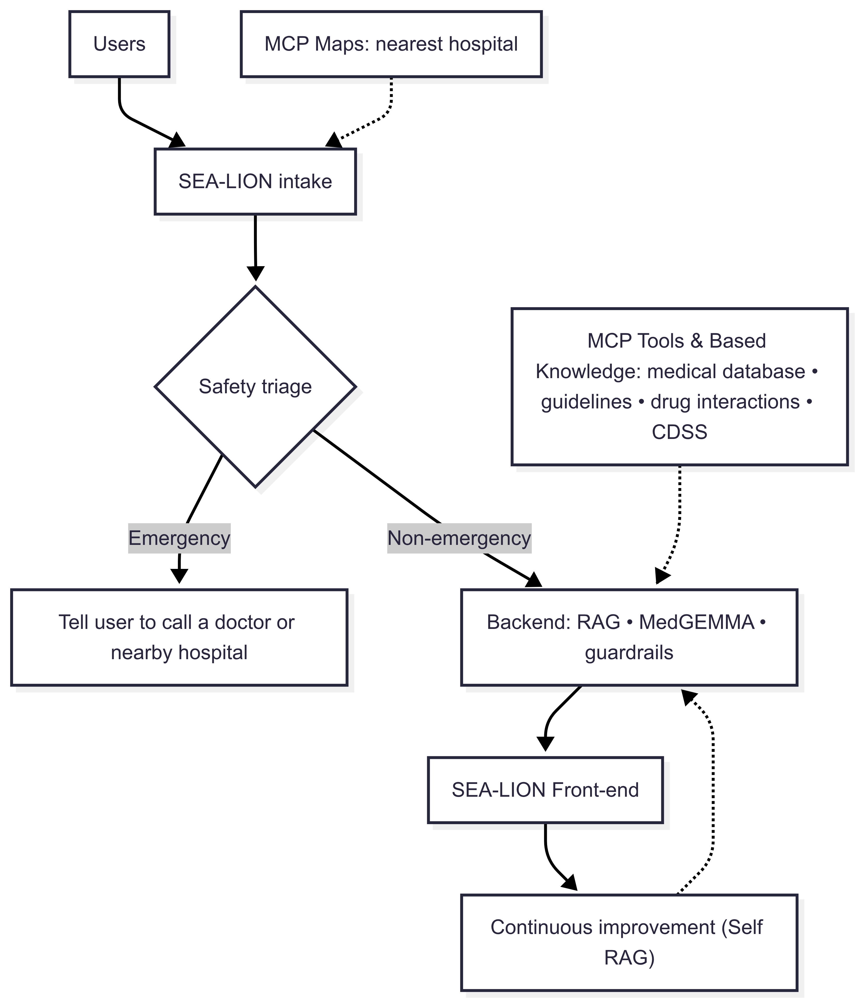
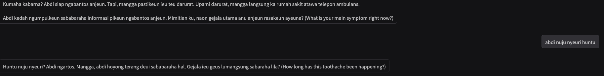
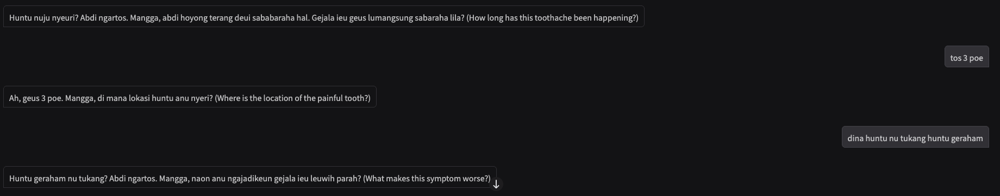
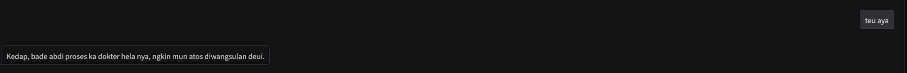

Indonesia: ~270M population with ~1 doctor per 2,500 patients. Western‑trained medical AI often misses local language & cultural nuance. Nusantara CaRas builds a native experience with SEA‑LION for intake and MedGEMMA for diagnosis, guided by a self‑evolving RAG system.
SEA‑LIONMedGEMMARAGGuardrails
Problem
Care Capacity Gap
~1 doctor for every 2,500 patients leads to long delays and limited access.
Underserved communities in West & Central Java often lack culturally adapted support.
Model–Culture Mismatch
Most medical AIs are tuned on Western data and fail to handle code‑switching & local idioms.
Users need safe triage with local norms & language (Sundanese/Javanese).
Solution
SEA-LION Frontend
Native intake in Sundanese and Javanese with strict local-language consistency
Emergency triage with culturally appropriate prompts
MedGEMMA Backend
Diagnosis support and guideline grounding via RAG
Guardrails for scope and safety with drug-interaction checks
Self-Evolving RAG
Uses patient follow-up feedback to continuously improve retrieval
Stores confirmed cases in vector DB for reuse on similar conditions
Accessibility & Safety
Lightweight, offline-ready SEA-LION for low-connectivity regions
Red-flag detection and automatic escalation to emergency care
Architecture

SEA‑LION intake with safety triage → MedGEMMA backend via RAG → feedback loop for continuous improvement.
The intake process is designed to be culturally fluent and user-friendly, to gather structured information of user condition. then will be forwaded in english to the MedGEMMA backend for diagnosing user condition.

Step 1 — Intake & Safety Triage. SEA‑LION greets in Sundanese/Javanese, confirms non‑emergency, acknowledges AI, and secures user consent.

Step 2 — Structured History. The bot gathers chief complaint and HPI (onset, location, duration, character, aggravating/alleviating factors, radiation, timing, severity).

Step 3 — Wrap‑up & Confirmation. Review of systems, past medical history, and meds/allergies are captured; the user confirms before JSON is emitted.
This JSON is posted to the MedGEMMA backend (with RAG + guardrails) for guideline-grounded reasoning.
MedGEMMA Backend Flow
The backend processes the intake JSON, retrieves relevant guidelines, and generates a structured response with differential diagnoses, recommended actions, and safety checks.
Receives intake JSON from SEA‑LION + historical illnese of user based on history (self-RAG)
if necessary the MedGEMMA would use the tools/base knowlege to generate the response
Retrieves relevant guidelines using RAG.
Generates differential diagnoses and recommended actions.
Checks for drug interactions and safety issues.
Returns structured response to SEA‑LION for user feedback.
example backend JSON Output
{
"diagnosis": "Pulpitis",
"hypothesis": "The patient is likely experiencing pulpitis, which is inflammation of the dental pulp, possibly due to caries or irritation, leading to intermittent pain exacerbated by cold stimuli and relieved by warmth. This could also indicate a dental abscess if there is an associated infection.",
"history_and_examination_findings": "The patient presents with a toothache that started 3 days ago, localized to the back teeth, characterized as a pressing, pulsating sensation. The pain is intermittent, lasting from minutes to hours, worsens in the morning, and is aggravated by cold water while alleviated by warm water. Severity is rated as 6 on a pain scale.",
"investigation_plan": "A dental examination is necessary, including visual inspection for caries, percussion testing for sensitivity, and possibly radiographs to assess for abscess formation or pulp involvement.",
"management_plan": "If diagnosed with pulpitis, options include restorative treatment such as fillings or possibly root canal therapy. If an abscess is present, appropriate antibiotics and drainage may be required.",
"prognosis": "With timely dental intervention, the prognosis is generally good. However, untreated pulpitis can progress to more severe complications, including tooth loss.",
"doctors_prescription": "Prescription for analgesics (e.g., ibuprofen) for pain management and, if an abscess is identified, antibiotics such as amoxicillin or clindamycin depending on patient allergy history.",
"summary": "A patient presents with a 3-day history of intermittent toothache localized to the back teeth, characterized by a pulsating sensation, worsened by cold and improved by warm stimuli. The clinical suspicion includes pulpitis or possibly a dental abscess."
}
SEA-LION Frontend Flow (Post-Backend)
After the backend (MedGEMMA + RAG) returns the analysis JSON, SEA-LION renders
the response into a localized patient-friendly format (Sundanese/Javanese). An example of the
rendered output is shown below.
🦷 Laporan Kaséhatan Anjeun
Hatur nuhun tos ngantosan, ieu diagonos sareng anjuran ti dokter:
📋 Gejala & Kaayaan
Anjeun parantos ngalaman nyeri huntu kira-kira 3 dinten. Lokasina di huntu tukang,
karasana denyut jeung diteken, datangna henteu tetep, tiasa sababaraha menit dugi sababaraha jam.
Nyeri langkung karasa isuk-isuk, beuki nyeri lamun kena cai tiis, sareng rada
hampang ku cai haneut. Skala nyeri anjeun ayeuna sakitar 6 tina 10.
🩺 Diagnosis & Pamanggih Dokter
Pulpitis → radang dina sélip huntu kusabab karies atanapi iritasi.
Abses huntu → upami aya inféksi anu nyertai.
🔍 Rencana Pamariksaan
Pamariksaan langsung huntu pikeun ningali karies.
Tés sensitipitas ku diketok huntu.
Rontgen pikeun ningali naha aya abses atanapi karusakan jero.
💊 Rencana Pangobatan
Upami pulpitis: tambalan atanapi perawatan saluran akar.
Upami aya abses: antibiotik sareng tindakan pikeun ngaleupaskeun nanah.
Kanggo nyeri ayeuna: tiasa nganggo obat nyeri (misalna ibuprofen) sasuai dosis dokter.
📈 Kasempetan Cageur
Lamun gancang diubaran, kasempetan cageurna saé pisan. Nanging, lamun teu diubaran, pulpitis tiasa janten langkung parna
sareng ngakibatkeun leungitna huntu.
📝 Resep Dokter
Obat nyeri: ibuprofen (gumantung kana dosis & kondisi anjeun).
Antibiotik: amoxicillin atanapi clindamycin (lamun aya tanda inféksi, ogé gumantung kana riwayat alergi).
🏥 Rumah Sakit / Apotek Nu Disarankeun
🏥 RSUD Kota Bandung – Jl. Rumah Sakit No.22, Kota Bandung.
🏥 RS Gigi dan Mulut Unpad – Jl. Sekeloa Selatan No.1, Bandung.
💊 Apotek Kimia Farma Dago – Jl. Ir. H. Juanda No.60, Bandung.
🙏 Kasimpulan
Mangga enggal konsultasi deui ka dokter gigi pikeun perlakuan anu langkung pas.
Simkuring ngiring mendoakeun anjeun enggal cageur sareng langkung nyaman.
⚠️ Catetan Penting: Ieu mangrupikeun laporan tina dokter. Mangga tetep nuturkeun pituduh dokter gigi anjeun.
Self-Evolving RAG (Patient Feedback → Vector DB → Future Recall)
One week (this can be adjusted) after the initial guidance, the patient receives a short check-in. Their feedback (symptom resolution,
confirmed diagnosis, treatment taken, outcomes) is normalized and stored as embeddings in a vector database.
Future cases with similar presentations can retrieve this feedback to improve grounding and recommendations.
1) Patient Check-in
SEA-LION sends a 1-week follow-up (chat/SMS/WhatsApp).